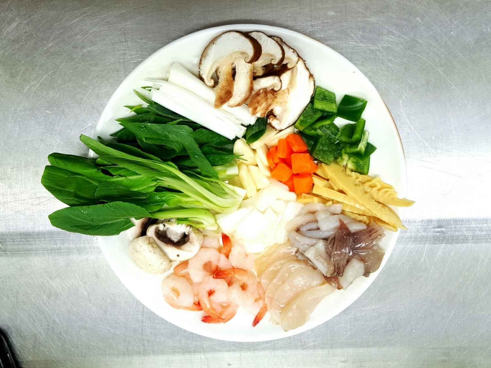
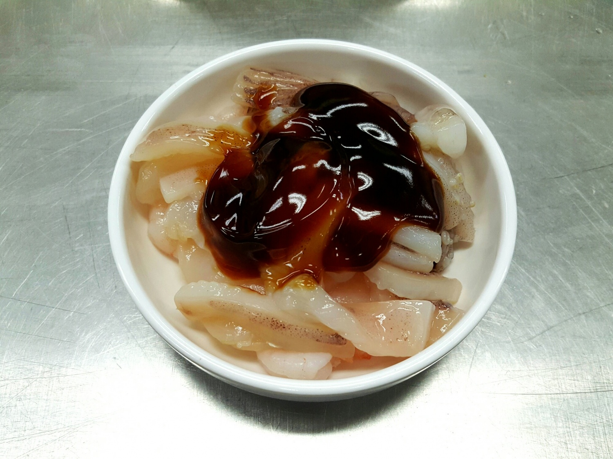
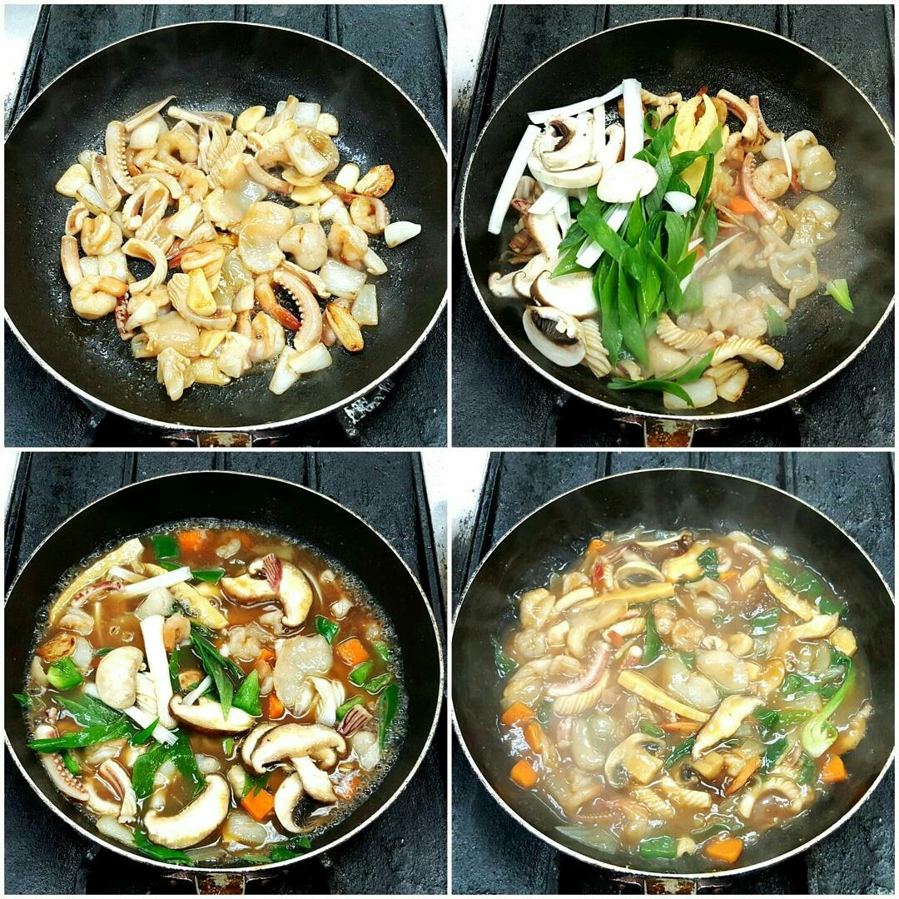

Chinese Food


재료 리스트
누룽지 | 오징어 1/2마리 | 칵테일새우 10마리 | 관자 1개 | 당근 1/4개 | 양파 1/2개 | 양송이버섯 1개 | 청피망 1/2개 | 통마늘 3개 | 청경채 2개 | 대파
양념 소스( 굴소스 두스푼 | 치킨스톡 반스푼 | 전분 | 생강즙 반스푼 )
레시피
1. 오징어는 양념이 잘 베도록 칼집을 넣어주시고 나머지 채소류는 먹기 좋은 크기로 잘라주세요.

2. 잘라 놓은 오징어와 새우에 굴소스를 사용해 밑간을 해주세요.

3. 준비된 팬에 식용류를 넉넉히 두르고 마늘과 양파를 먼저 볶아주세요.
그 다음 해산물을 넣어 볶아준 뒤
청경채를 제외한 나머지 채소를 넣고 센 불에 볶아주세요.
물 한컵 반과 양념을 넣고 5분간 끓여준 뒤
청경채를 넣어주세요.

4. 전분과 물은 1:2 비율로 섞어 천천히 부어주며 농도를 맞춰주세요.
그 다음 완성된 요리를 접시에 옮겨주세요
깐풍 만두 완성 !!